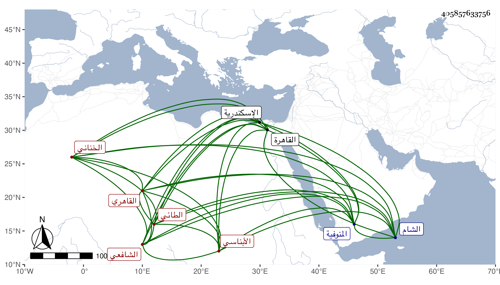

0902Sakhawi.DawLamic.ITO20230111-ara1.EIS1600.405857633756
Biography ID: 405857633756
إبراهيم بن علي بن أحمد بن محمد بن أحمد بن يزيد برهان الدين الطائي الأبناسي الأصل الخناني بضم المعجمة ثم نون خفيفة وآخره نون القاهري الشافعي والد أحمد الآتي ويعرف بالأبناسي . ولد بأم خنان من المنوفية وقدم القاهرة فحفظ القرآن وحضر الدروس ومن شيوخه في الفقه الشرف السبكي والونائي والعبادي ولازم الاشتغال بالفرائض والحساب بحيث صارت له فيهما مشاركة جيدة وانتفع في ذلك بالشريف على تلميذ ابن المجدي وقرأ على الكافياجي في المتوسط وعلى الزين الأبناسي في المنطق وغيره وجود الخط على الزين بن الصائغ وبرع فيه ونسخ نسخا من البخاري وربما باع النسخة منه بخمسين دينارا وتكسب بالشهادة وباشر التوقيع وكان قادرا على الإنشاء بحسب الوقت وربما أنشأ بعض الخطب وناب عن ناصر الدين بن أصيل في التوقيع عند المؤيد أحمد في أيام سلطنة أبيه الأشرف اينال واختص به بحيث استقر به في مشيخة تربة والده . وحج وسافر إلى الشام ودخل الاسكندرية مرارا آخرها قبيل موته ورجع منها وهو متوعك فمات في جمادى الثانية سنة ثلاث وسبعين وقد جاز الخمسين وخلف أولادا وأسند وصيته للزين الأبناسي لكونه كان زوج أوسطهم لابنته وسمعت الثناء عليه في الفرائض والحساب والقدرة على إنشاء الرسائل والخطب منه قال مع شيء في الفقه وتهجد وصوم رحمه الله وإيانا .
